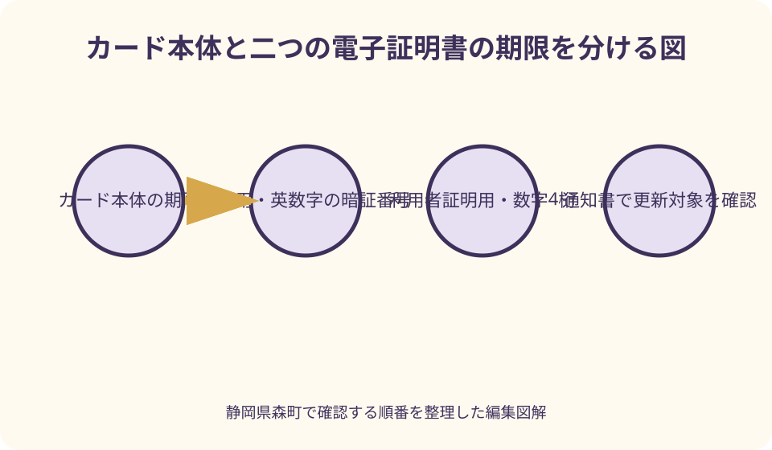
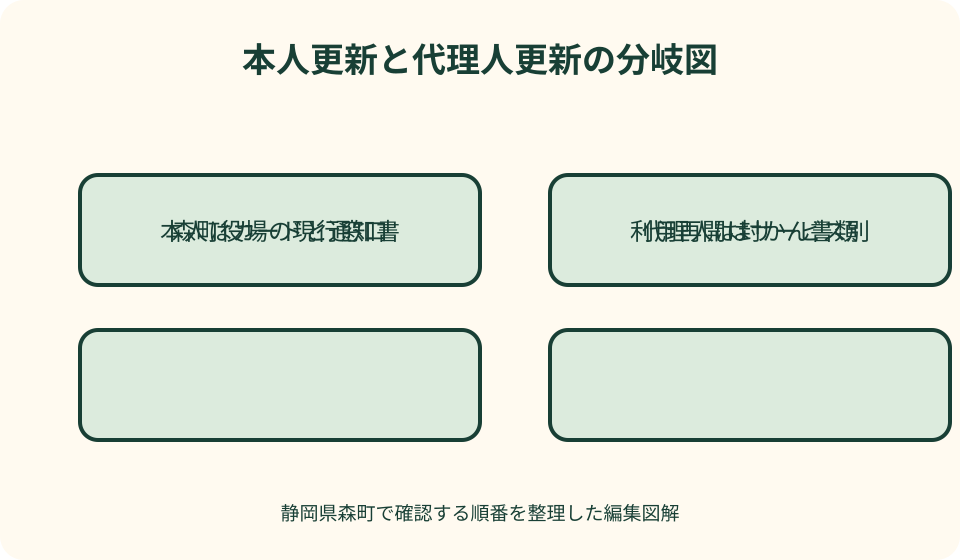

行政手続・証明書｜最終確認 2026-08-10
静岡県森町でマイナンバーカードの電子証明書を更新する｜期限・暗証番号・代理人の確認順
有効期限通知を見て、マイナンバーカードそのものが使えなくなると思う人は少なくありません。しかし、カード本体とICチップ内の電子証明書は別々の期限で動きます。静岡県森町での窓口、二つの電子証明書、暗証番号、代理人の封入書類、更新直後に使えないサービスまでを、当日の迷いが減る順番で整理します。

編集イラスト最初に分けるのはカード本体と電子証明書の期限
有効期限通知が届いたら、通知の見出しだけで判断せず、更新対象を確認します。マイナンバーカードは顔写真付きの本人確認書類であるカード本体と、ICチップに記録される電子証明書から成り、両者の有効期限は同じとは限りません。電子証明書だけが期限を迎えても、カード本体の期限が残っていれば、顔写真付き本人確認書類として直ちに無効になるわけではありません。
反対に、電子証明書が失効すると、カードを財布に入れて持っているだけでは補えない機能が止まります。e-Taxなどの電子申請、マイナポータルへのログイン、森町が案内するコンビニ交付など、ICチップ内の証明書を使うサービスが影響を受けます。『カードは見た目に変わらないから大丈夫』という確認の仕方では不足します。
電子証明書の更新時期は、国のマイナンバーカード総合サイトが示す更新可能期間と、手元の有効期限通知を照合します。一般には有効期限の三か月前から手続できる案内ですが、誕生日との関係や通知の到着時期を自己計算だけで決めず、通知に印字された期限を基準にしてください。通知が見当たらなくても更新できる場合があるため、紛失した時点で諦めず森町の窓口へ持ち物を確認します。
カード本体も同時期に期限を迎える場合は、既存カードのICチップへ電子証明書を書き込むだけの更新とは流れが異なります。新しいカードの申請、受取案内、本人確認が関係するため、『電子証明書更新の持ち物』だけを見て役場へ向かわないことが大切です。通知書の更新対象欄を読み、分からなければカード本体の期限も伝えて問い合わせます。
2種類の電子証明書を用途と暗証番号で見分ける
マイナンバーカードの電子証明書には、署名用電子証明書と利用者証明用電子証明書があります。名前が似ていますが、同じ暗証番号を当然に使うものではありません。更新前に用途と暗証番号の種類を分けておくと、窓口で『どの暗証番号か分からない』という混乱を減らせます。
署名用電子証明書は、オンラインで作った申請データが本人によって作成され、改ざんされていないことを示す場面で使われます。e-Taxなど電子署名を伴う手続が代表例です。暗証番号は英数字を組み合わせる方式で、利用者証明用の数字四桁とは別物として管理します。具体的な文字数条件は、設定時の控えや国の最新案内で確認してください。
利用者証明用電子証明書は、マイナポータルへのログインやコンビニ交付など、利用者本人であることを証明する場面で使われます。森町のコンビニ交付案内では、利用者証明用電子証明書が搭載されたカードと数字四桁の暗証番号が必要とされています。証明書を取得する予定がある人は、この機能が更新後いつ反映されるかまで確認対象にします。
顔認証マイナンバーカードを選んでいる人は、暗証番号を使うサービスの範囲が通常のカードと異なります。健康保険証としての利用を目的に選んだカードでも、マイナポータルやコンビニ交付を同じように使えるとは限りません。カードの種類を家族の記憶で決めず、窓口へ『顔認証カードである』と先に伝え、希望するサービスが使えるか確認します。
森町役場へ行く前に公式ページを三方向から確認する
静岡県森町での電子証明書更新は、住民生活課住民係の案内を入口にします。森町は2026年4月から役場一階ロビーにマイナンバーカード専用窓口を設け、電子証明書の更新を含む手続を扱うと案内しています。ただし庁舎内の配置や受付方法は変わり得るため、来庁日の公式案内で場所を再確認します。
窓口へ行ける時間は、カード交付等の町公式案内と水曜日の延長窓口案内を突き合わせます。現行案内では通常の開庁時間に加え、水曜は一部業務を延長し、電子証明書更新も対象に挙げられています。到着が終了間際になる場合は、処理に必要な時間や受付締切が別に設けられていないか電話で確認すると確実です。
検索結果に『日曜交付』という森町のページが残っていても、そのページでは日曜交付業務を2024年3月で終了したと明記されています。ページ名だけを見て日曜日に向かうと、現在の運用と食い違います。公開日や更新日、終了のお知らせまで読み、現在利用できる平日窓口と水曜延長を軸に予定を組みます。
三つ目は、更新後に使いたいサービスの案内です。たとえば住民票などをコンビニで取得したい人は、電子証明書更新ページだけでなく森町のコンビニ交付ページも読みます。更新・カード取得後は翌営業日から利用可能という町の注意書きがあるため、役場で更新した帰りにそのまま店舗で証明書を出す予定は避けます。

本人が更新する日の持ち物と暗証番号
本人が窓口へ行く場合、中心になる持ち物は現在のマイナンバーカードです。有効期限通知書が届いていれば一緒に持参し、町から個別に案内された書類があれば外さないよう一つの袋にまとめます。通知書がない場合の扱いは、氏名・住所・生年月日を電話口で必要以上に伝えるのではなく、町公式に記載された連絡先で確認します。
暗証番号は紙に大きく書いて人目に触れる状態で持ち歩かず、本人が入力できるよう準備します。署名用と利用者証明用を混同しやすい人は、『英数字のもの』『数字四桁のもの』という種類だけをメモし、番号そのものの保管場所は分けます。家族が善意で番号を聞き出して代わりに入力する運用は避けます。
暗証番号を忘れていても、更新そのものを放置する理由にはなりません。国の総合サイトは、更新窓口で暗証番号を再設定できる旨を案内しています。森町のコンビニ交付案内でも、数字四桁を連続して誤るとロックされ、役場で再設定が必要と説明されています。思い当たる数字を端末で繰り返し試す前に、窓口で忘れたことを伝えます。
氏名や住所を変更した直後の人は、単純な期限更新と同じ処理になるとは限りません。特に署名用電子証明書は記録事項の変更により失効し、再発行の確認が必要になる場合があります。転居届や氏名変更手続と同日に行うなら、『期限更新』『券面変更』『署名用の再発行』のどれが必要かを窓口で切り分けてください。
代理人による更新は封かん書類の作り方が要点
本人が病気、仕事、移動の事情などで来庁できない場合、代理人による更新が可能なことがあります。ただし、カードを家族へ渡すだけでは足りません。国の総合サイトは、有効期限通知に同封された照会書兼回答書を申請者本人が記入し、暗証番号が代理人に見えないよう封筒へ入れて封をする流れを示しています。
照会書兼回答書は、代理人が本人に代わって内容を推測して書く用紙ではありません。本人が必要事項と暗証番号を記入し、指定された方法で封かんします。封筒を開けた状態で持参すると、本人の意思確認や秘密保持の条件を満たせない可能性があるため、通知書の説明を一行ずつ確認します。
代理人は、本人のマイナンバーカードに加え、代理人自身の顔写真付き本人確認書類などを求められます。必要書類の種類や点数は、国の一般案内だけで確定せず、森町へ来庁前に確認してください。通知が届いていない場合は、照会書兼回答書を住民登録地から送ってもらう必要があると国は案内しているため、当日飛び込みで完了できると思わない方が安全です。
封かんされた回答書の暗証番号が誤っていると、代理人がその場で本人へ聞き直して入力し直すことはできず、同日に更新が完了しない場合があります。本人は設定時の控えを落ち着いて確認し、不明なら代理人方式を急ぐ前に森町へ相談します。期限直前の一日だけを候補にせず、再手続の余地を残した日程にします。
良い点
電子証明書を期限前に更新する良い点は、日常の本人確認とオンライン機能を分けて管理できることです。期限通知を『カード交換のお知らせ』とだけ受け取らず、普段利用するサービスを書き出せば、e-Tax、マイナポータル、コンビニ交付など自分に関係する機能を優先して確認できます。
森町役場の専用窓口と水曜延長を確認してから動けば、平日の日中に時間を取りにくい人も候補を比較できます。役場へ一度行くことだけを目標にせず、カードの種類、通知書、暗証番号、利用予定サービスを一枚に整理することで、窓口で質問すべき点が明確になります。
本人と代理人の手順を事前に分けることにも意味があります。本人が行ける可能性を待ちながら期限が過ぎるより、代理手続に必要な照会書の有無を早く確かめれば、郵送を依頼する時間を確保できます。家族は暗証番号を共有せずに支援でき、本人の情報を守りながら移動だけを補えます。
更新後の反映時間まで予定に含めると、証明書取得や申告の締切に余裕を持てます。とくに森町のコンビニ交付は翌営業日からという案内があるため、更新日と取得日を別日に置く判断ができます。『窓口処理が終わった時刻』と『外部サービスが使える時刻』を同一視しないことが実用上の利点です。
注文したい点
利用者の立場から注文したいのは、カード本体、署名用電子証明書、利用者証明用電子証明書という三つの期限が、一枚の通知を見ただけでは直感的に分かりにくいことです。通知の表現に迷ったら、期限日だけでなく『更新対象として何と書かれているか』を町へ伝え、必要な手続名を復唱して確認したいところです。
森町公式サイトには、現在の専用窓口、水曜延長、終了済みの日曜交付、コンビニ交付の注意が別ページにあります。検索結果の一ページで予定を確定すると、過去の受付日を現在も使えると誤解する余地があります。関連ページ同士に現在の受付方法を示す分かりやすい導線と、最終更新日の明示が続くことを期待します。
代理人の手続は、封かん書類、本人のカード、代理人の本人確認書類、正しい暗証番号がそろって初めて進む繊細な流れです。『家族なら代わりに行ける』という短い説明だけでは準備不足になりやすいため、森町で必要な書類を一画面で確認できる案内があると、北部など役場まで距離がある世帯の再訪を減らせます。
更新が済んでも、サービスごとの反映時間は一律ではありません。コンビニ交付の翌営業日という町の案内に加え、e-Taxやマイナポータルなど目的別に、どこで稼働状況を確認するかが必要です。役場窓口が電子サービスの利用結果まで保証するものではないため、利用先の公式情報へつなぐ説明が重要です。
期限が過ぎた後と更新直後にできることを決めつけない
電子証明書の期限が過ぎても、更新手続そのものが永久にできなくなるわけではありません。森町の案内に従って新しい電子証明書を書き込む手続を相談します。ただし失効している期間は電子サービスを使えないため、申告や証明書取得の期限がある人は、更新完了を待つ以外の提出方法や役場窓口での証明書請求も検討します。
カード本体の有効期限が残っている場合でも、失効した電子証明書でマイナポータルへ入ったり、コンビニ交付を利用したりすることはできません。カードを端末へ何度も入れ直して解決しようとせず、有効期限とロック状態を分けて確認します。期限切れと暗証番号ロックは原因も解決方法も同じではありません。
更新窓口で処理が完了した直後に、すべての連携先へ即時反映されると断定しないことも大切です。森町のコンビニ交付は翌営業日から利用可能との記載を基準にし、メンテナンス情報も当日に確認します。急いで住民票が必要なら、役場の交付窓口で取得できる条件と受付時間を別に尋ねます。
健康保険証利用、医療機関の端末、オンライン申請などは、それぞれ運用主体と障害情報が異なります。更新済みカードが一度読み取れなかったという事実だけで、電子証明書の書き込み失敗と断定できません。画面のエラー表示、利用日時、サービス名を記録し、役場と利用先のどちらへ確認すべきか整理します。

森町で暮らす人の来庁計画と家族支援
森町は町なかから北部の山間地域まで広く、同じ開庁時間でも往復負担は世帯によって違います。三倉や天方方面などから来庁する人は、公共交通の時刻、家族の送迎、帰路の明るさを含めて予定します。水曜延長を使う場合も、窓口が開いていることと移動手段があることを別々に確認します。
高齢の家族を支援するときは、暗証番号を家族全員の共有情報にしないことが出発点です。本人が入力できるなら付き添いは移動と説明の補助にとどめ、代理人になるなら封かん方式を守ります。本人が意思を示せない、署名できないなど個別事情がある場合は、一般的な代理人説明へ当てはめず森町へ事前相談します。
同じ世帯で複数人の通知が届いても、カードと通知書を一袋に混ぜないようにします。カードごとに氏名、電子証明書の期限、本人来庁か代理か、暗証番号確認の状況を一覧にし、通知書は本人別のクリアファイルへ入れます。代理人用の封筒を開封しないよう目立つ印を付けるのも有効です。
仕事や通学の都合で窓口時間に間に合わない場合、古い日曜窓口へ期待せず、現行の水曜延長が使えるかを確認します。期限が近いなら、勤務調整をする前に必要な処理時間、予約の要否、混雑しやすい時期を問い合わせます。電子証明書の更新可能期間に入ったら、最終週まで待たない方が再訪へ対応できます。
オンライン申請・コンビニ交付を使う人の逆算表
e-Taxを予定する人は、申告期限から逆算して、電子証明書の期限、署名用暗証番号、対応端末、利用者識別番号などを別々に確認します。電子証明書だけ更新しても、利用機器やアプリの更新が済んでいなければ申告画面で止まることがあります。国税庁の当年案内も読み、役場手続と申告準備を一つに混ぜません。
マイナポータルを使う人は、利用者証明用の数字四桁と、手続によって署名用が必要になる場面を分けます。ログインできることと、電子署名を付けて申請を送信できることは同じ確認ではありません。更新前後に必要な操作を一度書き出し、期限当日に初めて試す予定を避けます。
森町のコンビニ交付で住民票や印鑑登録証明書などを取得する人は、取得できる証明書、利用時間、休止日、手数料を来店日に公式ページで確認します。電子証明書の更新後は翌営業日からという条件に加え、システムメンテナンスが入る場合もあります。店内端末の前で急いで暗証番号を試さない準備が必要です。
期限のある提出物が翌日に迫っているなら、電子サービス一本に頼りません。役場窓口での取得、提出先に認められる別書類、提出期限の扱いをそれぞれの機関へ確認します。更新できたから間に合う、期限切れだから間に合わないと早合点せず、取得手段と提出要件を分けるのが逆算の要点です。
代案・結論
本人が平日に来庁できない場合の第一の代案は、現在案内されている水曜延長の利用可否を確認することです。第二は、代理人更新に必要な照会書兼回答書を整えることです。第三は、電子サービスの利用期限が先に来るなら、証明書の窓口取得や紙での提出など、目的そのものを果たす別経路を利用先へ尋ねることです。
通知書をなくした場合は、インターネット上の様式を似た名前で探して自作せず、森町へ通知なしで本人更新できる持ち物を確認します。代理人を立てるなら、国の案内どおり照会書兼回答書の送付を住民登録地へ依頼する必要がある場合があります。期限直前であっても、暗証番号をメールや通話で代理人へ伝える方法は選びません。
暗証番号を忘れた場合は、思い当たる番号を連続入力する代わりに、本人がカードを持って窓口で再設定を相談します。代理人手続で番号に確信がないなら、誤記により当日更新できない可能性を踏まえ、本人来庁へ切り替えられる日程や照会書の再準備を考えます。早く終えることより、秘密を保った正しい更新を優先します。
結論として、森町での更新前に確定すべきものは、更新対象、二つの電子証明書、本人か代理人か、暗証番号、更新後に使いたいサービスの五点です。カード本体を持ち、現行の窓口時間を確認し、代理人なら封かん書類を整えます。そして更新日とサービス利用日を分ければ、期限通知から実利用までの手戻りを減らせます。
大石の視点
電子証明書の更新は、制度を詳しく暗記する競争ではありません。大石の視点では、家族が『カードを持っているか』だけでなく、『どの電子機能をいつ使うか』まで一枚で共有することを重視します。通知書、期限、利用目的が離れて保管されると、必要な時に期限切れへ気付きにくいからです。
森町では移動距離の差が来庁負担へ直結します。町なかの人と山間部の人へ同じように『役場へ行けばよい』と伝えるだけでは実用的ではありません。出発前に窓口、受付時間、持ち物、処理後の反映日を確認し、一回の移動で何を確定させるか決めることが、地域で暮らす人に合った準備です。
家族のデジタル手続を支えるとき、暗証番号を代わりに管理すれば便利に見えます。しかし、番号を共有しなくても、通知を保管する、公式ページを印刷する、役場へ送迎する、封筒を開けず代理書類を届けるといった支援はできます。本人の秘密と意思を守る設計こそ、長く続けられる家族支援です。
更新が終わったら、カードの写しや暗証番号を家族共有フォルダへ保存するのではなく、更新日、次の期限、利用するサービス、次に公式情報を確認する日だけを記録します。必要以上の個人情報を残さず、行動に必要な事実だけを引き継ぐ。これが電子証明書を暮らしの道具として扱う現実的な管理方法です。
当日から利用再開までのチェックリスト
出発前は、通知書で更新対象と期限を確認し、カード本体、通知書、本人来庁か代理人かを点検します。本人なら二種類の暗証番号を思い出せるか、代理人なら本人が照会書兼回答書を書いて封かんしたかを確認します。窓口の場所、受付時間、予約の要否は来庁日当日の町公式情報へ戻ります。
窓口では、最初に『電子証明書の期限更新』で来たこと、カード本体の期限、氏名・住所変更の有無、利用したいサービスを伝えます。暗証番号を忘れた、ロックした可能性がある、顔認証カードであるといった事情は後から隠さず、受付時に分けて説明します。代理人は封筒を自分で開けず、職員の案内に従います。
処理後は、どの電子証明書が更新されたか、次の有効期限をどこで確認するか、暗証番号再設定の有無を整理します。カード券面に電子証明書の期限を記入する欄があっても、書き方は窓口の案内に従います。受領した紙はカードと別に保管し、暗証番号を書いたメモを他人が見える場所へ残しません。
利用再開はサービス別に確かめます。森町のコンビニ交付は更新翌営業日以降を基準に、最新の停止情報を確認してから利用します。マイナポータルやe-Taxは各運営者の案内とエラー情報を見ます。一つのサービスが使えたことを、すべての機能が復旧した証拠にはしないでください。
迷ったときに窓口へ伝える五つの情報
問い合わせでは、第一に通知書へ書かれた更新対象を伝えます。『マイナンバーカードの更新』だけでは、カード本体か電子証明書かが分かりません。第二にカード本体の有効期限、第三に電子証明書の期限、第四に本人か代理人か、第五に更新後すぐ使いたいサービスを整理してから電話します。
代理人相談なら、通知書の有無、照会書兼回答書を本人が記入できるか、代理人が用意できる顔写真付き本人確認書類の種類を尋ねます。本人の暗証番号を電話で読み上げる必要はありません。番号そのものではなく、『把握している』『忘れた』『ロックの可能性がある』という状態を伝えれば、必要な案内を受けやすくなります。
窓口時間の相談では、平日の日付、水曜延長を希望するか、到着見込み、複数人分かを伝えます。過去の日曜交付ページを見た場合は、そのページが終了済みであることを前提に、現在の臨時窓口が別途設けられていないかだけを確認します。古いページの情報を窓口担当者へ根拠として押し付けないことも大切です。
回答を受けたら、確認日、担当部署、持ち物、受付候補日、更新後の利用開始目安をメモします。制度説明を長く写すより、『通知あり・本人来庁・署名用と利用者証明用を更新・翌営業日以降にコンビニ交付確認』のように今回の行動へ落とすと、家族も迷わず引き継げます。
公式情報・確認先
掲載内容は次の一次情報を基礎に整理しました。営業、料金、催し、交通は変わるため、出発前または手続き前にリンク先で最新情報を確認してください。
- マイナンバーカード専用窓口の設置について（静岡県森町、2026-08-10確認）
- 水曜日の窓口業務時間延長（静岡県森町、2026-08-10確認）
- 証明書のコンビニ交付サービスについて（静岡県森町、2026-08-10確認）
- マイナンバーカードの日曜交付について（終了のお知らせを含む）（静岡県森町、2026-08-10確認）
- マイナンバーカードと電子証明書の更新について（地方公共団体情報システム機構（マイナンバーカード総合サイト）、2026-08-10確認）
- 電子証明書の更新手続を代理人に委任できますか（地方公共団体情報システム機構（マイナンバーカード総合サイト）、2026-08-10確認）